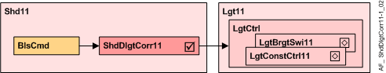
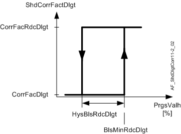
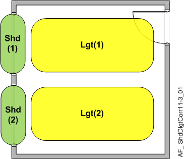
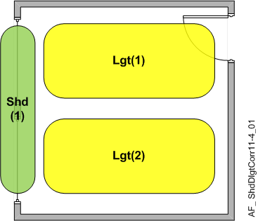

阴影日光校正 (ShdDlgtCorr11)
Overview
应用功能》Shading daylight correction 11" (ShdDlgtCorr11）使亮度传感器特性适应实际百叶窗位置（百叶窗处于防眩光位置时的日光比完全打开时的日光少。）
Function

Input
AF 读取当前百叶窗位置并确定有效日光校正系数 (ShdCorrFacDlgt)。
Output
ShdCorrFacDlgt 在 BACnet 上可用，用于恒定照明控制：
- If the progress value of blinds height is higher or equal to BlsMinRdcDlgt, ShdCorrFacDlgt = CorrFacRdcDlgt.
- If the progress value of blinds height is lower than (BlsMinRdcDlgt - BlsHystRdcDlgt), ShdCorrFacDlgt = CorrFacDlgt.

日光校正因子和减少日光的确定是亮度传感器校准工作流程的一部分，LgtBrgtSwi11/LgtConstCtl11. 文档对此进行了详细描述
Correction factor daylight:
- determined in normal daylight situation with blinds fully open
Correction factor reduced daylight:
- determined in normal daylight situation but with blinds in glare protection position.
Configuration
 Parameters
Parameters
描述 | 范围 | 默认值 |
|---|---|---|
Correction factor daylight | CorrFacDlgt | 1.0 |
Correction factor for reduced daylight | CorrFacRdcDlgt | 1.0 |
Minimum blinds position by reduced daylight | BlsMinRdcDlgt | 70 [%] |
Hysteresis blinds position by reduced daylight | HysBlsRdcDlgt | 30 [%] |
Interface
界面 | 描述 | 类型 | 参考号 | 拥有者 |
|---|---|---|---|---|
ShdCorrDlgt | Shading correction factor daylight | ACalcVal | ● | - |
Engineering and commissioning
Diagnostics
为了验证 CFC 中图表的功能，输出引脚 ShdCorrDlgt 显示来自阴影的日光校正因子。
Assigning Correction factor Daylight

| 
|
|
|
将 Shd(1).ShdCorrDlgt(1) 赋值给 Lgt(1).LgtCorrDlgtCol | 分配 Shd(1).ShdCorrDlgt(1) |